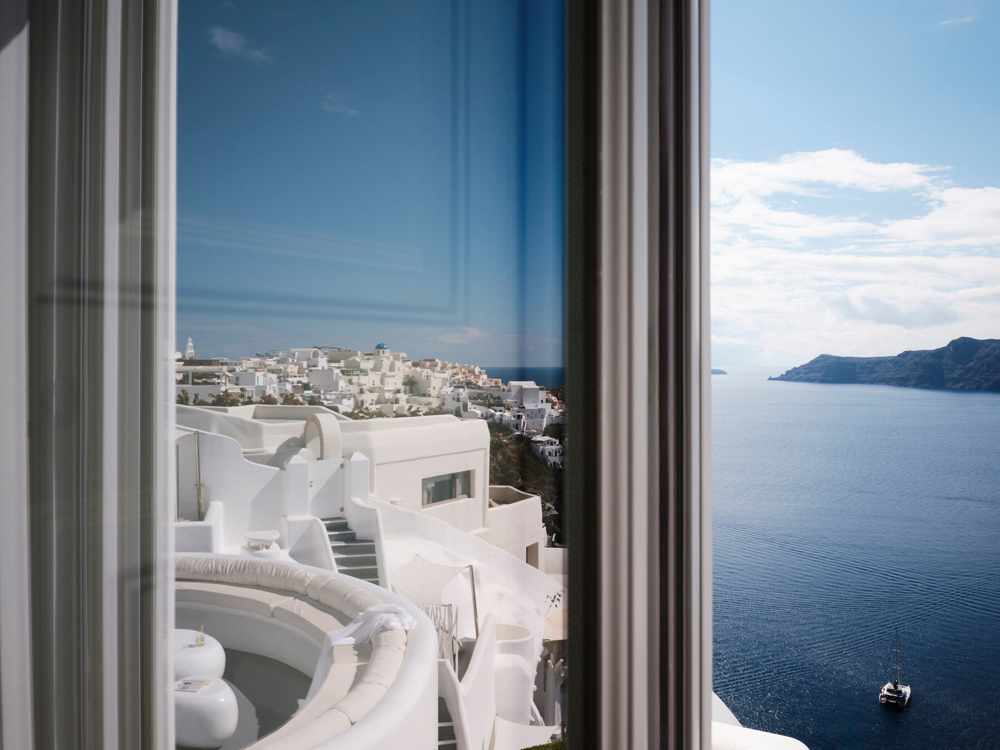

Dinner Reservations
The thing to lock in the same day you book your room
Booked · 4–8 Weeks Ahead In High Season
Santorini's best tables go earlier than almost anywhere else I've been in Greece. From mid-June through mid-September, the sunset-facing tables at the top restaurants are gone weeks out, and what's left is 6:00pm or 10:30pm. Tell me your dates and I'll book the nights that matter before they're gone — including the rooms that are effectively closed to walk-ins.
I book to your hotel, not to a list. Where you're staying decides which nights are worth leaving for and which are better spent on your own terrace. Andronis guests get a different plan than Imerovigli guests.
The sunset dinner is a specific booking. Most caldera tables face the caldera, not the sunset — and the handful that face an actual sunset into the Aegean are the ones I go after first.
Two big dinners in three nights, not five. The rest should be long lunches at the water. I'd rather hold two excellent tables for you than fill every evening.
Send me your dates and I'll tell you which nights are already tight and what I can still get — usually within a day.

Your Day On The Water
The best half-day on the island, chartered properly
Best For · Honeymoons, Anniversaries, Anyone Skipping The Sunset Crowds
Seeing the caldera from the water is the one excursion I'd put on essentially every Santorini trip. I book these privately with the crews I use myself — not through a booking site — and I place the day where it won't get wrecked by wind or collide with your dinner.
Private over shared, always. Shared catamarans run 40–50 people. A private charter is 4–5 hours with the hot springs, Red and White Beach, a meal aboard and an open bar — at your pace, and I'll match the boat to your budget rather than the other way around.
Which day matters as much as which boat. The Meltemi cancels sails with a few hours' notice, so I put the charter early in your stay with room to move it — something you can't do once you've prepaid a fixed date online.
Usually a morning, not a sunset. Calmer water, far fewer boats at the swim stops, and your evening stays free for the table I've booked you.
Tell me your dates and who's coming and I'll price the right boat for the right morning — and hold it before the good crews fill up.

Beach & Down Days
One is plenty — and it needs a driver and a booking
Best For · A Break From The Caldera, Long Lunches, Younger Couples
Something most first-timers don't realize: there's no swimming from the caldera. The beaches are on the opposite side of the island, 25–40 minutes from Oia, and they're black or red volcanic sand rather than the white sand people picture. Worth one day, planned — not worth improvising on a cruise-ship morning.
Front-row beds sell out by mid-morning. In July and August a walk-in at the better clubs is a lost afternoon. I reserve the beds and the transfer together so the day actually works.
I'll tell you which ones to skip. Two of the island's most photographed beaches aren't worth your only beach day, and knowing that in advance is worth more than a list of names.
If the water is the point, the answer isn't Santorini. That's an argument for adding a second island — which I'll build in rather than talk you out of.
One well-planned beach day beats three improvised ones. I'll place it on the right day of your stay and arrange the car.